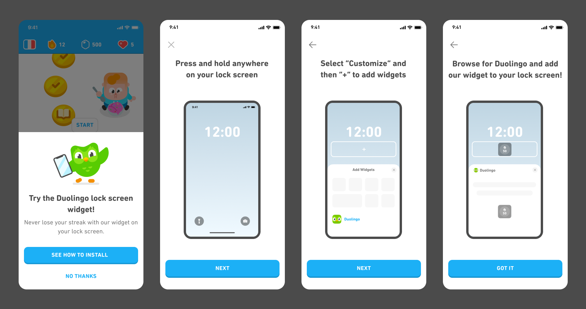

While we strive to make UI elements clear and avoid explicit instructions, we occasionally deviate from these guidelines to help us better achieve business and user goals.
For example, when we started offering a Duolingo widget on iOS, we knew the iOS widget installation process wasn't straightforward. Since we couldn't change the installation process itself, we felt it was necessary to explain the process step-by-step.
Eventually, the team decided that the benefit of increased widget installs outweighed the suboptimal UX of displaying explicit instructions. Even in this case, though, we made sure to minimize text and use illustrations whenever possible.
